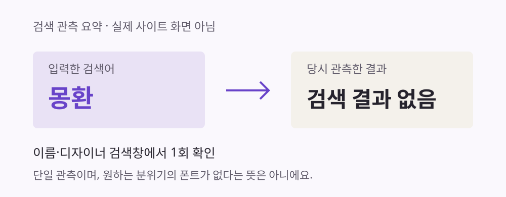

몽환분위기한글
01찾기
느낌에 맞는 폰트 탐색
일부 서비스의 탐색 UI 확인원하는 타이포,
분위기 기반 폰트 탐색과 정밀 편집을 위한
데이터 수집 및 분석 계획
분위기는 떠오르지만
폰트 이름은 몰랐어요.
이름·디자이너 검색창에서는
결과를 찾지 못했어요.

산돌구름을 써보며 느낀 점: “분위기는 좋은데, 이 끝만 조금 바꾸고 싶다.”
느낌에 맞는 폰트 탐색
일부 서비스의 탐색 UI 확인후보를 조합해 시안 생성
산돌구름 공식 기능 안내 확인끝·장식 등 선택한 부분 수정
정밀 제어 범위는 앞으로 검증개 폰트 패밀리
20종 라벨 · 3,306건 연결
메타데이터 기준 · 실제 표시 검사 전
140건의 조절 축 · 획별 수정과는 달라요
전체 ID 299개 · 전문 미확보 2개
폰트 특성·공식 태그·라이선스
사람이 느끼는 분위기 · 검색·수정 경험
공식 태그와 사람의 느낌이
얼마나 맞는지 살펴봐요.
획·장식의 선택, 재생성 여부,
SVG 내부 구조를 확인해요.
시간과 성공·실패를 함께 보고
이유를 짧은 인터뷰로 들어요.
같은 문구·크기의 폰트를 보고
어떤 느낌인지 평가해요.
같은 요청·시간 제한으로 찾아요.
가능한 후보 조건도 맞춰요.
같은 시작 모양을 주고
정해진 부분만 바꿔요.
분위기와 실제 폰트의 연결을 도와요.
무엇을 어디까지 바꿀 수 있는지 알려줘요.
가장 자주 막히는 부분부터 검토해요.
선택한 느낌과 설정을 다시 활용해요.